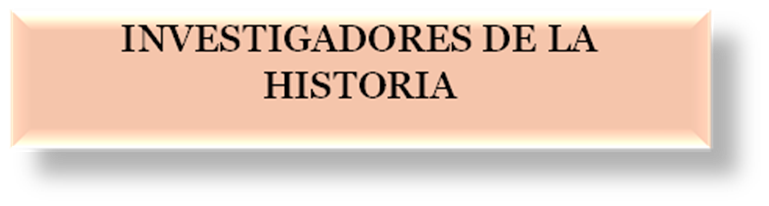
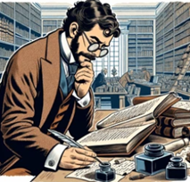

Tarea Infografía
- 1 sesion
- 1 sesión
- Individual
- Individual


Instrucciones para la realización de una infografía
¿Qué es una infografía? ¿Qué debo conseguir?
Una infografía es una herramienta de comunicación visual que representa, resume y explica información de un tema concreto. Por tanto, combina textos breves, imágenes, gráficos y diagramas para explicar temas complejos de forma rápida, sencilla y atractiva. Su objetivo principal es sintetizar información para facilitar su comprensión y retención
Pasos a seguir para su realización:
I. Primer paso: ¿Qué voy a contar? ¿A quién va dirigida?
Lo primero es definir el proyecto que voy a realizar y tener claro a quién va a ir dirigido. Piensa detenidamente el tema que vas a elegir y ten en cuenta el público al que va a ir dirigida tu infografía. La primera pregunta que deberías hacerte es ¿cuál es el objetivo que quiero lograr? Un error común es poner objetivos demasiado ambiciosos, no elijas un tema muy amplio, es probable que la infografía acabe siendo caótica y con demasiada información.
¿A quién va dirigida? Vuestra infografía no es solo para la profesora. Debe estar diseñada para ser entendida por alumnos y alumnas de 4ºde ESO, tener en cuenta que no va dirigida exclusivamente a los compañeros y compañeras del aula, también debe servir para el alumnado que se acerca por primera vez al tema.
II. Segundo paso: búsqueda de información.
Una vez decidió el tema que vas a tratar debes buscar información adecuada y veraz, para ello es fundamental emplear fuentes de calidad y fiables como libros de texto, enciclopedias digitales, o sitios académicos .edu. Recuerda que las fuentes son fundamentales, a continuación, te pongo algunos ejemplos de fuentes que puedes consultar:
https://leccionesdehistoria.com/curso/4-eso/historia-4-eso/
https://www.worldhistory.org/trans/es/
https://www.profesorfrancisco.es/2017/12/geografia-e-historia-4-eso.html
Si haces una buena investigación, seguramente tendrás una buena infografía. Selecciona la información más relevante, recuerda que una infografía no es un documento de texto pegado en un póster. Debéis trabajar la información, sintetizarla.
III. Tercer paso: Piensa cómo quieres que sea tu infografía, prepara un boceto. Reflexiona ¿Qué quiero contar exactamente? Lo ideal es materializar tu idea en un esquema o dibujo esbozado. Decide qué datos son imprescindibles y dónde irán colocados. Este borrador deberá ser validado por el profesor o profesora antes de que comiences la parte digital del proyecto.
Recuerda que una imagen comunica más rápido que mil palabras y lo ideal es que combines diferentes tipos de imágenes, puedes elegir o combinar estos modelos según tu idea:
- Líneas de tiempo: Ideales para ver el ascenso al poder.
- Comparativas: Para mostrar similitudes y diferencias entre Hitler, Mussolini y Stalin.
- Mapas conceptuales: Para explicar cómo funcionaba la estructura del Estado totalitario.
- Estadísticas: Gráficos de barras o iconos para mostrar el impacto de la represión o la producción industrial.
Otra parte fundamental es tener en cuenta la accesibilidad de vuestro producto, para ello debéis tener en cuenta la tipografía que vais a utilizar, es importante usar fuentes claras (tipo Sans Serif, Arial, Montserrat, Times New Roman, etc.). Evitad las letras excesivamente decorativas que dificultan la lectura, cuidar el contraste de colores, que visualmente sea fácil de leer, que el texto resalte sobre el fondo (ej. texto oscuro sobre fondo claro). No uséis combinaciones que cansen la vista como colores neón o muy brillantes.
IV. Cuarto paso: la seguridad es lo primero, por ello, debéis tener precaución a la hora de registraros en las herramientas de diseño. Importante: No compartáis datos personales ni contraseñas en plataformas desconocidas.
Podéis usar las herramientas digitales que queráis, os recomiendo utilizar Canva o Genially por su versatilidad.